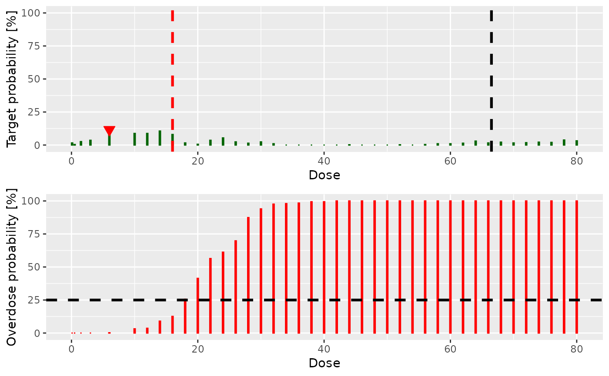
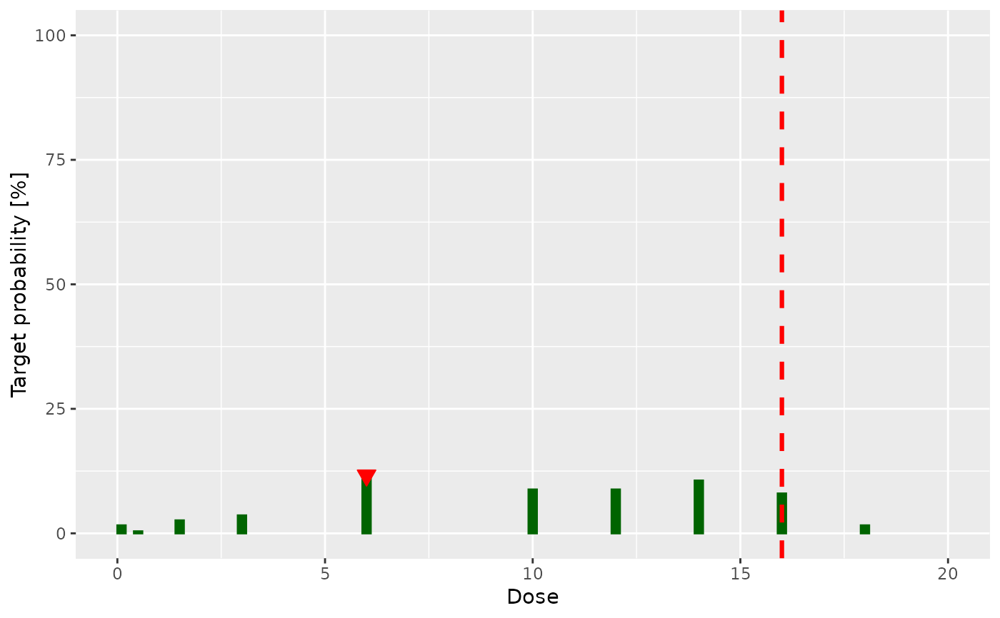

Compute the recommended next best dose.
nextBest(nextBest, doselimit, samples, model, data, ...) # S4 method for NextBestMTD,numeric,Samples,Model,Data nextBest(nextBest, doselimit, samples, model, data, ...) # S4 method for NextBestNCRM,numeric,Samples,Model,Data nextBest(nextBest, doselimit, samples, model, data, ...) # S4 method for NextBestNCRM,numeric,Samples,Model,DataParts nextBest(nextBest, doselimit, samples, model, data, ...) # S4 method for NextBestThreePlusThree,missing,missing,missing,Data nextBest(nextBest, doselimit, samples, model, data, ...) # S4 method for NextBestDualEndpoint,numeric,Samples,DualEndpoint,Data nextBest(nextBest, doselimit, samples, model, data, ...) # S4 method for NextBestMinDist,numeric,Samples,Model,Data nextBest(nextBest, doselimit, samples, model, data, ...) # S4 method for NextBestTDsamples,numeric,Samples,LogisticIndepBeta,Data nextBest(nextBest, doselimit, samples, model, data, ...) # S4 method for NextBestTD,numeric,missing,LogisticIndepBeta,Data nextBest(nextBest, doselimit, model, data, SIM = FALSE, ...) # S4 method for NextBestMaxGain,numeric,missing,ModelTox,DataDual nextBest(nextBest, doselimit, model, data, Effmodel, SIM = FALSE, ...) # S4 method for NextBestMaxGainSamples,numeric,Samples,ModelTox,DataDual nextBest( nextBest, doselimit, samples, model, data, Effmodel, Effsamples, SIM = FALSE, ... )
| nextBest | The rule, an object of class |
|---|---|
| doselimit | The maximum allowed next dose. If this is an empty (length 0) vector, then no dose limit will be applied in the course of dose recommendation calculation, and a corresponding warning is given. |
| samples | the |
| model | The model input, an object of class |
| data | The data input, an object of class |
| ... | possible additional arguments without method dispatch |
| SIM | internal command to notify if this method is used within simulations. Default as FALSE |
| Effmodel | the efficacy model of |
| Effsamples | the efficacy samples of |
a list with the next best dose (element value)
on the grid defined in data, and a plot depicting this recommendation
(element plot). In case of multiple plots also an element singlePlots
is included which returns the list of single plots, which allows for further
customization of these. Also additional list elements describing the outcome
of the rule can be contained.
This function outputs the next best dose recommendation based on the
corresponding rule nextBest, the posterior samples from the
model and the underlying data.
nextBest,NextBestMTD,numeric,Samples,Model,Data-method: Find the next best dose based on the MTD rule
nextBest,NextBestNCRM,numeric,Samples,Model,Data-method: Find the next best dose based on the NCRM method. The
additional list element probs contains the target and overdosing
probabilities (across all doses in the dose grid)
used in the derivation of the next best dose.
nextBest,NextBestNCRM,numeric,Samples,Model,DataParts-method: Find the next best dose based on the NCRM method when
two parts trial is used.
nextBest,NextBestThreePlusThree,missing,missing,missing,Data-method: Find the next best dose based on the 3+3 method
nextBest,NextBestDualEndpoint,numeric,Samples,DualEndpoint,Data-method: Find the next best dose based on the dual endpoint
model. The additional list element probs contains the target and
overdosing probabilities (across all doses in the dose grid) used in the
derivation of the next best dose.
nextBest,NextBestMinDist,numeric,Samples,Model,Data-method: Method for NextBestMinDist class, which will give
the dose which is below the dose limit and has an estimated DLT probability
which is closest to the target dose.
nextBest,NextBestTDsamples,numeric,Samples,LogisticIndepBeta,Data-method: Find the next best dose based on the 'NextBestTDsamples'
class rule. This a method based only on the DLE responses and for
LogisticIndepBeta model class object involving DLE samples
nextBest,NextBestTD,numeric,missing,LogisticIndepBeta,Data-method: Find the next best dose based on the 'NextBestTD'
class rule. This a method based only on the DLE responses and for
LogisticIndepBeta model class object without DLE samples
nextBest,NextBestMaxGain,numeric,missing,ModelTox,DataDual-method: for slots nextBest,doselimit, data and SIM. This is
a function to find the next best dose based on the 'NextBestMaxGain'
class rule. This a method based on the DLE responses and efficacy responses without DLE and
efficacy samples.
nextBest,NextBestMaxGainSamples,numeric,Samples,ModelTox,DataDual-method: for slots nextBest,doselimit, data and SIM. This is
a function to find the next best dose based on the 'NextBestMaxGainSamples'
class rule. This a method based on the DLE responses and efficacy responses with DLE and
efficacy samples. Effmodel must be of class Effloglog or
EffFlexi.
# Create the data data <- Data(x=c(0.1, 0.5, 1.5, 3, 6, 10, 10, 10), y=c(0, 0, 0, 0, 0, 0, 1, 0), cohort=c(0, 1, 2, 3, 4, 5, 5, 5), doseGrid= c(0.1, 0.5, 1.5, 3, 6, seq(from=10, to=80, by=2))) #> Used default patient IDs! # Initialize the CRM model used to model the data model <- LogisticLogNormal(mean=c(-0.85, 1), cov= matrix(c(1, -0.5, -0.5, 1), nrow=2), refDose=56) # Set-up some MCMC parameters and generate samples from the posterior options <- McmcOptions(burnin=100, step=2, samples=2000) set.seed(94) samples <- mcmc(data, model, options) # Define the rule for dose increments and calculate the maximum dose allowed myIncrements <- IncrementsRelative(intervals=c(0, 20), increments=c(1, 0.33)) nextMaxDose <- maxDose(myIncrements, data=data) # Define the rule which will be used to select the next best dose # based on the class 'NextBestMTD' mtdNextBest <- NextBestMTD(target=0.33, derive= function(mtdSamples){ quantile(mtdSamples, probs=0.25) }) # Calculate the next best dose doseRecommendation <- nextBest(mtdNextBest, doselimit=nextMaxDose, samples=samples, model=model, data=data) # Create the data data <- Data(x=c(0.1, 0.5, 1.5, 3, 6, 10, 10, 10), y=c(0, 0, 0, 0, 0, 0, 1, 0), cohort=c(0, 1, 2, 3, 4, 5, 5, 5), doseGrid= c(0.1, 0.5, 1.5, 3, 6, seq(from=10, to=80, by=2))) #> Used default patient IDs! # Initialize the CRM model used to model the data model <- LogisticLogNormal(mean=c(-0.85, 1), cov= matrix(c(1, -0.5, -0.5, 1), nrow=2), refDose=56) # Set-up some MCMC parameters and generate samples from the posterior options <- McmcOptions(burnin=100, step=2, samples=2000) set.seed(94) samples <- mcmc(data, model, options) # Define the rule for dose increments and calculate the maximum dose allowed myIncrements <- IncrementsRelative(intervals=c(0, 20), increments=c(1, 0.33)) nextMaxDose <- maxDose(myIncrements, data=data) # Define the rule which will be used to select the next best dose # based on the class 'NextBestNCRM' myNextBest <- NextBestNCRM(target=c(0.2, 0.35), overdose=c(0.35, 1), maxOverdoseProb=0.25) # Calculate the next best dose doseRecommendation <- nextBest(myNextBest, doselimit=nextMaxDose, samples=samples, model=model, data=data) # Look at the probabilities doseRecommendation$probs #> dose target overdose #> [1,] 0.1 0.0015 0.0000 #> [2,] 0.5 0.0090 0.0005 #> [3,] 1.5 0.0225 0.0005 #> [4,] 3.0 0.0365 0.0100 #> [5,] 6.0 0.1195 0.0215 #> [6,] 10.0 0.2175 0.0395 #> [7,] 12.0 0.2735 0.0665 #> [8,] 14.0 0.3120 0.0950 #> [9,] 16.0 0.3400 0.1220 #> [10,] 18.0 0.3360 0.1625 #> [11,] 20.0 0.3255 0.2085 #> [12,] 22.0 0.3440 0.2505 #> [13,] 24.0 0.3585 0.2880 #> [14,] 26.0 0.3380 0.3320 #> [15,] 28.0 0.3485 0.3595 #> [16,] 30.0 0.3415 0.4015 #> [17,] 32.0 0.3260 0.4340 #> [18,] 34.0 0.3275 0.4630 #> [19,] 36.0 0.3190 0.4885 #> [20,] 38.0 0.3105 0.5265 #> [21,] 40.0 0.3025 0.5585 #> [22,] 42.0 0.2845 0.5915 #> [23,] 44.0 0.2740 0.6120 #> [24,] 46.0 0.2660 0.6375 #> [25,] 48.0 0.2655 0.6530 #> [26,] 50.0 0.2585 0.6670 #> [27,] 52.0 0.2460 0.6885 #> [28,] 54.0 0.2340 0.7060 #> [29,] 56.0 0.2220 0.7230 #> [30,] 58.0 0.2085 0.7435 #> [31,] 60.0 0.1860 0.7695 #> [32,] 62.0 0.1695 0.7885 #> [33,] 64.0 0.1630 0.7990 #> [34,] 66.0 0.1565 0.8095 #> [35,] 68.0 0.1455 0.8220 #> [36,] 70.0 0.1415 0.8295 #> [37,] 72.0 0.1260 0.8450 #> [38,] 74.0 0.1220 0.8500 #> [39,] 76.0 0.1165 0.8585 #> [40,] 78.0 0.1095 0.8665 #> [41,] 80.0 0.1025 0.8735 # create an object of class 'DataParts' data <- DataParts(x=c(0.1,0.5,1.5), y=c(0,0,0), doseGrid=c(0.1,0.5,1.5,3,6, seq(from=10,to=80,by=2)), part=c(1L,1L,1L), nextPart=1L, part1Ladder=c(0.1,0.5,1.5,3,6,10)) #> Used default patient IDs! #> Used best guess cohort indices! # Initialize the CRM model used to model the data model <- LogisticLogNormal(mean=c(-0.85, 1), cov= matrix(c(1, -0.5, -0.5, 1), nrow=2), refDose=56) # Set-up some MCMC parameters and generate samples from the posterior options <- McmcOptions(burnin=100, step=2, samples=2000) set.seed(94) samples <- mcmc(data, model, options) myIncrements <- IncrementsRelativeParts(dltStart=0, cleanStart=1) nextMaxDose <- maxDose(myIncrements, data=data) # Define the rule which will be used to select the next best dose # based on the class 'NextBestNCRM' myNextBest <- NextBestNCRM(target=c(0.2, 0.35), overdose=c(0.35, 1), maxOverdoseProb=0.25) # Calculate the next best dose doseRecommendation <- nextBest(myNextBest, doselimit=nextMaxDose, samples=samples, model=model, data=data) # Create the data data <- Data(x=c(5, 5, 5, 10, 10, 10), y=c(0, 0, 0, 0, 1, 0), cohort=c(0, 0, 0, 1, 1, 1), doseGrid= c(0.1, 0.5, 1.5, 3, 5, seq(from=10, to=80, by=2))) #> Used default patient IDs! # The rule to select the next best dose will be based on the 3+3 method myNextBest <- NextBestThreePlusThree() # Calculate the next best dose doseRecommendation <- nextBest(myNextBest, data=data) # Create the data data <- DataDual( x=c(0.1, 0.5, 1.5, 3, 6, 10, 10, 10, 20, 20, 20, 40, 40, 40, 50, 50, 50), y=c(0, 0, 0, 0, 0, 0, 1, 0, 0, 1, 1, 0, 0, 1, 0, 1, 1), w=c(0.31, 0.42, 0.59, 0.45, 0.6, 0.7, 0.55, 0.6, 0.52, 0.54, 0.56, 0.43, 0.41, 0.39, 0.34, 0.38, 0.21), doseGrid=c(0.1, 0.5, 1.5, 3, 6, seq(from=10, to=80, by=2))) #> Used default patient IDs! #> Used best guess cohort indices! # Initialize the Dual-Endpoint model (in this case RW1) model <- DualEndpointRW(mu = c(0, 1), Sigma = matrix(c(1, 0, 0, 1), nrow=2), sigma2betaW = 0.01, sigma2W = c(a=0.1, b=0.1), rho = c(a=1, b=1), smooth = "RW1") # Set-up some MCMC parameters and generate samples from the posterior options <- McmcOptions(burnin=100, step=2, samples=500) set.seed(94) samples <- mcmc(data, model, options) # Define the rule for dose increments and calculate the maximum dose allowed myIncrements <- IncrementsRelative(intervals=c(0, 20), increments=c(1, 0.33)) nextMaxDose <- maxDose(myIncrements, data=data) # Define the rule which will be used to select the next best dose # In this case target a dose achieving at least 0.9 of maximum biomarker level (efficacy) # and with a probability below 0.25 that prob(DLT)>0.35 (safety) myNextBest <- NextBestDualEndpoint(target=c(0.9, 1), overdose=c(0.35, 1), maxOverdoseProb=0.25) # Calculate the next best dose doseRecommendation <- nextBest(myNextBest, doselimit=nextMaxDose, samples=samples, model=model, data=data) ## joint plot print(doseRecommendation$plot)  ## show customization of single plot variant1 <- doseRecommendation$singlePlots$plot1 + xlim(0, 20) print(variant1) #> Warning: Removed 31 rows containing missing values (geom_bar). #> Warning: Removed 1 rows containing missing values (geom_vline).  ## we need a data object with doses >= 1: data<-Data(x=c(25,50,50,75,150,200,225,300), y=c(0,0,0,0,1,1,1,1), doseGrid=seq(from=25,to=300,by=25)) #> Used default patient IDs! #> Used best guess cohort indices! ##The 'nextBest' method using NextBestTDsamples' rules class object ## That is dose-esclation procedure using the 'logisticIndepBeta' DLE model involving DLE samples ## model must be of 'LogisticIndepBeta' class model<-LogisticIndepBeta(binDLE=c(1.05,1.8),DLEweights=c(3,3),DLEdose=c(25,300),data=data) ##Define the options for MCMC options <- McmcOptions(burnin=100,step=2,samples=1000) ##Then genreate the samples samples <- mcmc(data, model, options) ##target probabilities of the occurrence of a DLE during trial and at the end of trial are ## defined as 0.35 and 0.3, respectively ##Specified in 'derive' such that the 30% posterior quantile of the TD35 and TD30 samples ## will be used as TD35 and TD30 estimates tdNextBest<-NextBestTDsamples(targetDuringTrial=0.35,targetEndOfTrial=0.3, derive=function(TDsamples){quantile(TDsamples,probs=0.3)}) ##doselimit is the maximum allowable dose level to be given to subjects RecommendDose<-nextBest(tdNextBest,doselimit=max(data@doseGrid),samples=samples, model=model,data=data) ## we need a data object with doses >= 1: data<-Data(x=c(25,50,50,75,150,200,225,300), y=c(0,0,0,0,1,1,1,1), doseGrid=seq(from=25,to=300,by=25)) #> Used default patient IDs! #> Used best guess cohort indices! ##The 'nextBest' method using NextBestTD' rules class object ## That is dose-esclation procedure using the 'logisticIndepBeta' DLE model involving DLE samples ## model must be of 'LogisticIndepBeta' class model<-LogisticIndepBeta(binDLE=c(1.05,1.8),DLEweights=c(3,3),DLEdose=c(25,300),data=data) ##target probabilities of the occurrence of a DLE during trial and at the end of trial ## are defined as 0.35 and 0.3, respectively tdNextBest<-NextBestTD(targetDuringTrial=0.35,targetEndOfTrial=0.3) ##doselimit is the maximum allowable dose level to be given to subjects RecommendDose<- nextBest(tdNextBest, doselimit=max(data@doseGrid), model=model, data=data) ## we need a data object with doses >= 1: data <-DataDual(x=c(25,50,25,50,75,300,250,150), y=c(0,0,0,0,0,1,1,0), w=c(0.31,0.42,0.59,0.45,0.6,0.7,0.6,0.52), doseGrid=seq(25,300,25),placebo=FALSE) #> Used default patient IDs! #> Used best guess cohort indices! ##The 'nextBest' method using NextBestMaxGain' rules class object ## using the 'ModelTox' class DLE model ## DLEmodel e.g 'LogisticIndepBeta' class DLEmodel<-LogisticIndepBeta(binDLE=c(1.05,1.8),DLEweights=c(3,3),DLEdose=c(25,300),data=data) ## using the 'ModelEff' class efficacy model ## Effmodel e.g 'Effloglog' class Effmodel<-Effloglog(Eff=c(1.223,2.513),Effdose=c(25,300),nu=c(a=1,b=0.025),data=data,c=0) ##target probabilities of the occurrence of a DLE during trial and at the ## end of trial are defined as ## 0.35 and 0.3, respectively mynextbest<-NextBestMaxGain(DLEDuringTrialtarget=0.35,DLEEndOfTrialtarget=0.3) ##doselimit is the maximum allowable dose level to be given to subjects RecommendDose<-nextBest(mynextbest,doselimit=300,model=DLEmodel,Effmodel=Effmodel,data=data) data <-DataDual(x=c(25,50,25,50,75,300,250,150), y=c(0,0,0,0,0,1,1,0), w=c(0.31,0.42,0.59,0.45,0.6,0.7,0.6,0.52), doseGrid=seq(25,300,25),placebo=FALSE) #> Used default patient IDs! #> Used best guess cohort indices! ##The 'nextBest' method using NextBestMaxGainSamples' rules class object ## using the 'ModelTox' class DLE model ## DLEmodel e.g 'LogisticIndepBeta' class DLEmodel<-LogisticIndepBeta(binDLE=c(1.05,1.8),DLEweights=c(3,3),DLEdose=c(25,300),data=data) ## using the 'ModelEff' class efficacy model ## Effmodel e.g 'Effloglog' class Effmodel<-Effloglog(c(1.223,2.513),c(25,300),nu=c(a=1,b=0.025),data=data,c=0) ##DLE and efficacy samples must be of 'Samples' Class DLEsamples<-mcmc(data,DLEmodel,options) Effsamples<-mcmc(data,Effmodel,options) ##target probabilities of the occurrence of a DLE during trial and at the end of trial ## are defined as 0.35 and 0.3, respectively ## Using 30% posterior quantile of the TD35 and TD30 samples as estimates of TD35 and TD30, ## function specified in TDderive slot ## Using the 50% posterior quantile of the Gstar (the dose which gives the maxim gain value) ## samples as Gstar estimate,function specified in Gstarderive slot mynextbest<-NextBestMaxGainSamples(DLEDuringTrialtarget=0.35, DLEEndOfTrialtarget=0.3, TDderive=function(TDsamples){ quantile(TDsamples,prob=0.3)}, Gstarderive=function(Gstarsamples){ quantile(Gstarsamples,prob=0.5)}) RecommendDose<-nextBest(mynextbest,doselimit=max(data@doseGrid),samples=DLEsamples,model=DLEmodel, data=data,Effmodel=Effmodel,Effsamples=Effsamples) ## now using the 'EffFlexi' class efficacy model: ##The 'nextBest' method using NextBestMaxGainSamples' rules class object for 'EffFlexi' model class ## using the 'ModelTox' class DLE model ## DLEmodel e.g 'LogisticIndepBeta' class Effmodel<- EffFlexi(Eff=c(1.223, 2.513),Effdose=c(25,300), sigma2=c(a=0.1,b=0.1), sigma2betaW=c(a=20,b=50),smooth="RW2",data=data) ##DLE and efficacy samples must be of 'Samples' Class DLEsamples<-mcmc(data,DLEmodel,options) Effsamples<-mcmc(data,Effmodel,options) ##target probabilities of the occurrence of a DLE during trial and at the ## end of trial are defined as 0.35 and 0.3, respectively ## Using 30% posterior quantile of the TD35 and TD30 samples as estimates of ## TD35 and TD30, function specified in TDderive slot ## Using the 50% posterio quantile of the Gstar (the dose which gives the maximum ## gain value) samples as Gstar estimate,function specified in Gstarderive slot mynextbest<-NextBestMaxGainSamples(DLEDuringTrialtarget=0.35, DLEEndOfTrialtarget=0.3, TDderive=function(TDsamples){ quantile(TDsamples,prob=0.3)}, Gstarderive=function(Gstarsamples){ quantile(Gstarsamples,prob=0.5)}) RecommendDose<-nextBest(mynextbest,doselimit=max(data@doseGrid),samples=DLEsamples, model=DLEmodel, data=data,Effmodel=Effmodel,Effsamples=Effsamples)